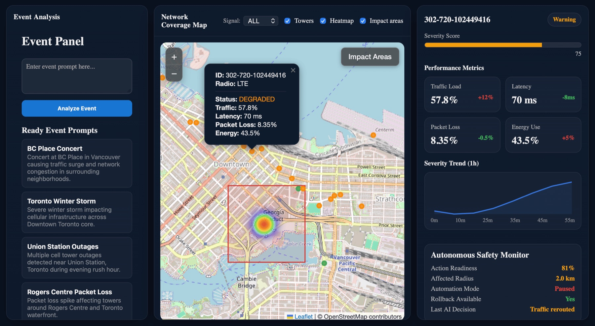

AI at the Edge — January 2025
Network Impact Analyzer — an AI-powered network impact analysis system that detects and analyzes service disruptions during events using a multi-agent orchestration framework. Processes natural-language queries, gathers intelligence from web and weather sources, and generates geospatial impact assessments.
Network Operations Center (NOC) engineers need rapid, data-driven network outage analysis during weather events, infrastructure failures, and other service disruptions. TelusGuardAI automates that analysis — processing natural-language queries, aggregating multi-source intelligence (web searches, weather data), and generating geospatial impact assessments with affected areas, severity levels, and confidence scores for prioritizing response efforts.
Built at the AI at the Edge event — one of the first substantial team projects undertaken. The central challenge on the front end wasn't technical execution so much as translation: turning an open-ended problem statement into a specific, buildable idea. Of two front-end team members, UI design and development was owned in full, from initial concept through several iterations to a final enterprise-style dark interface; a teammate independently built the mapping component and the multi-agent backend.
The most demanding technical work was integration: bringing two independently developed front-end pieces together with the backend into one coherent system. Working with the Telus AI Gateway and multiple LLM models (Gemma, DeepSeek, GPT) provided hands-on experience coordinating AI agents for complex analytical tasks — the modular architecture is designed to be extensible with real API integrations and additional data sources.
Three-tier architecture: frontend (React + Vite, Leaflet maps), backend (Flask REST API, multi-agent orchestrator, in-memory cache), and an AI agent layer of three specialized agents working in sequence — the Event Intelligence Agent (Gemma) parses natural-language queries, extracts metadata, and generates search queries; the Web Intelligence Agent executes parallel web searches, fetches weather data, and aggregates results; the Geospatial Reasoning Agent (GPT) analyzes the aggregated data and identifies affected areas with coordinates, severity, and confidence.
Data flows: user query → Event Intelligence → Web Intelligence → Geospatial Reasoning → orchestrator → cache → frontend visualization.
